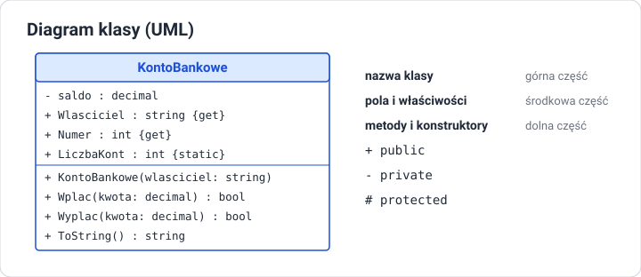

Wprowadzenie do programowania obiektowego
Cel lekcji
Po tej lekcji będziesz umieć wyjaśnić, czym programowanie obiektowe różni się od proceduralnego, opisać pojęcia klasy, obiektu, pola, metody i stanu obiektu, scharakteryzować cztery filary OOP (abstrakcję, hermetyzację, dziedziczenie, polimorfizm) oraz przełożyć opis problemu na projekt klasy i zapisać go jako diagram UML.
Paradygmaty programowania
Paradygmat to sposób myślenia o tym, jak zbudować program.
| Paradygmat | Program to … | Przykład |
|---|---|---|
| proceduralny | ciąg instrukcji i procedur (metod) działających na danych przekazywanych z miejsca na miejsce | program liczący średnią ocen z tablicy |
| obiektowy | zbiór współpracujących obiektów, z których każdy ma własne dane i zachowanie | system bankowy z kontami, klientami i przelewami |
| funkcyjny | złożenie funkcji przekształcających dane bez zmieniania ich stanu | przetwarzanie danych zapytaniami LINQ |
C# wspiera wszystkie trzy, ale jego fundamentem jest programowanie obiektowe (OOP — Object-Oriented Programming).
Problem: rozproszone dane
Wyobraź sobie grę z wieloma graczami, napisaną bez klas:
string imie1 = "Ada";
int punkty1 = 10;
string imie2 = "Olek";
int punkty2 = 3;
// 100 graczy? 100 par zmiennych?
Albo z tablicami „równoległymi”:
string[] imiona = { "Ada", "Olek", "Ewa" };
int[] punkty = { 10, 3, 7 };
int[] poziomy = { 2, 1, 1 };
// Sortujesz imiona — musisz pamiętać, żeby w tej samej kolejności posortować punkty i poziomy.
// Usuwasz gracza — z trzech tablic naraz.
Dane jednego gracza są rozrzucone po wielu zmiennych, a reguły (np. „punkty nie mogą być ujemne”) trzeba pilnować w każdym miejscu programu, które te dane zmienia. Przy rozbudowie programu łatwo o błąd.
Rozwiązanie: obiekt
Obiekt łączy w jedną całość:
- dane — co obiekt wie o sobie (imię, punkty, poziom),
- zachowanie — co obiekt potrafi zrobić (dodać punkty, awansować, przedstawić się).
class Gracz
{
public string Imie = "";
public int Punkty;
public int Poziom = 1;
public void DodajPunkty(int ile)
{
if (ile > 0) Punkty += ile;
if (Punkty >= Poziom * 100) Poziom++;
}
}
Teraz „gracz” to jeden byt. Lista graczy to List<Gracz>, a reguła dodawania punktów jest zapisana w jednym miejscu — w klasie.
Klasa i obiekt
| Klasa | Obiekt (instancja) | |
|---|---|---|
| czym jest | opis rodzaju obiektów — wzór, plan, szablon | konkretny egzemplarz utworzony według tego opisu |
| ile ich jest | jedna definicja w kodzie | dowolnie wiele, każdy tworzony przez new |
| co zawiera | listę pól i metod | własne wartości pól |
| analogia | projekt domu | konkretne domy zbudowane według projektu |
Gracz ada = new Gracz(); // pierwszy obiekt
Gracz olek = new Gracz(); // drugi obiekt — osobne Imie, Punkty, Poziom
ada.Imie = "Ada";
olek.Imie = "Olek";
ada.DodajPunkty(150); // zmienia tylko obiekt ada
Pojęcia:
- pole — zmienna należąca do obiektu,
- metoda — działanie, które obiekt wykonuje; ma dostęp do pól swojego obiektu,
- stan obiektu — aktualne wartości wszystkich jego pól,
- składowe (members) — wspólna nazwa pól, właściwości, metod i konstruktorów.
Każda klasa jest nowym typem — tak jak int czy string. Można tworzyć zmienne typu Gracz, tablice Gracz[], listy List<Gracz> i przekazywać obiekty do metod.
Cztery filary programowania obiektowego
| Filar | Pytanie | W skrócie |
|---|---|---|
| Abstrakcja | Co jest istotne w modelu? | opisujemy obiekt tylko przez to, co ważne dla zadania |
| Hermetyzacja (enkapsulacja) | Kto może zmieniać dane obiektu? | ukrywamy dane i udostępniamy kontrolowany interfejs |
| Dziedziczenie | Czy klasa może rozszerzać inną? | klasa pochodna przejmuje cechy klasy bazowej i dodaje własne |
| Polimorfizm | Czy to samo wywołanie może działać różnie? | ten sam komunikat, inne zachowanie zależnie od rodzaju obiektu |
Abstrakcja
Model nie odwzorowuje rzeczywistości w całości — tylko to, czego potrzebuje program. Konto bankowe w systemie banku ma właściciela, numer i saldo, ale nie ma koloru karty ani zapachu oddziału. Ten sam człowiek w systemie szkoły to uczeń (klasa, oceny), a w systemie przychodni — pacjent (PESEL, historia wizyt).
Hermetyzacja
Obiekt sam pilnuje swojego stanu. Pola są ukryte (private), a zmienić je można tylko przez metody, które sprawdzają poprawność. Konto nie pozwoli wypłacić więcej, niż ma na saldzie, bo nikt z zewnątrz nie może ustawić salda bezpośrednio.
Dziedziczenie
Nowa klasa może rozszerzać istniejącą. Pies i Kot to rodzaje Zwierzęcia: mają imię i wiek jak każde zwierzę, a do tego własne zachowania. Wspólny kod zapisujemy raz — w klasie bazowej.
Polimorfizm
Ten sam komunikat, wysłany do różnych obiektów, wywołuje różne zachowanie. Polecenie „podaj pole” wysłane do koła, prostokąta i trójkąta daje trzy różne obliczenia — a kod, który je wysyła, nie musi wiedzieć, z jaką figurą ma do czynienia.
Abstrakcję i hermetyzację ćwiczymy od pierwszej klasy, którą napiszesz. Dziedziczeniu i polimorfizmowi poświęcone są osobne lekcje.
Od opisu do projektu klasy
Jak zamienić opis problemu na klasę? Zadaj pytania:
„Konto ma właściciela i saldo. Można na nie wpłacić i z niego wypłacić pieniądze. Saldo nie może być ujemne.”
| Pytanie | Co z tego wynika w kodzie |
|---|---|
| Jakie są rzeczowniki? | klasy i pola: Konto, Wlasciciel, Saldo |
| Jakie są czasowniki? | metody: Wplac, Wyplac |
| Jakie obowiązują reguły? | walidacja: kwota dodatnia, wypłata nie większa niż saldo |
| Co ukryć? | saldo: zmiany tylko przez metody |
| Jak tworzymy obiekt? | konstruktor ustawia poprawny stan początkowy |
Diagram klasy UML
UML (Unified Modeling Language) to standardowy sposób rysowania projektu programu. Diagram klasy ma trzy części: nazwę, pola (i właściwości) oraz metody.

| Znak | Widoczność |
|---|---|
+ |
public — dostępne dla każdego |
- |
private — tylko wewnątrz klasy |
# |
protected — klasa i klasy pochodne |
Typ zapisuje się po dwukropku: saldo : decimal, Wplac(kwota: decimal) : bool. Diagram pozwala omówić projekt, zanim powstanie kod — i jest częstym elementem dokumentacji oraz zadań egzaminacyjnych.
Obiekty wokół nas — w bibliotece .NET
Korzystasz z obiektów od pierwszej lekcji C#:
string imie = "Ada";
Console.WriteLine(imie.ToUpper()); // metoda obiektu string
Console.WriteLine(imie.Length); // właściwość obiektu string
List<int> liczby = new List<int>(); // tworzenie obiektu klasy List<int>
liczby.Add(5); // wywołanie metody obiektu
DateTime teraz = DateTime.Now;
Console.WriteLine(teraz.AddDays(7).DayOfWeek);
new List<int>() tworzy obiekt dokładnie tak, jak new Gracz(). Różnica: klasę List<T> napisali programiści Microsoftu, a klasę Gracz piszesz Ty.
Sprawdź się
1. Klasa i obiekt
Wyjaśnij różnicę między klasą a obiektem na trzech przykładach spoza informatyki.
2. Problem tablic równoległych
Masz tablice imiona, punkty i poziomy. Opisz dwie operacje, przy których łatwo o błąd, i wyjaśnij, jak klasa Gracz je upraszcza.
3. Filary
Dopasuj filar OOP do opisu: (a) prostokąt i koło mają metodę Pole(), ale liczą ją inaczej; (b) saldo konta można zmienić tylko metodą Wplac; (c) w systemie biblioteki książka ma tytuł i autora, ale nie ma wagi; (d) SamochodOsobowy i Ciezarowka mają wspólne cechy zapisane w klasie Pojazd.
4. Projekt klasy
Na podstawie opisu zaprojektuj klasę i narysuj jej diagram UML: „Książka w bibliotece ma tytuł, autora, rok wydania i informację, czy jest wypożyczona. Książkę można wypożyczyć (jeśli nie jest wypożyczona) i zwrócić. Rok wydania nie może być z przyszłości.”
5. Abstrakcja
Ta sama osoba występuje w systemie szkoły, przychodni i sklepu internetowego. Dla każdego systemu wypisz trzy pola i dwie metody, które będą potrzebne w modelu tej osoby.